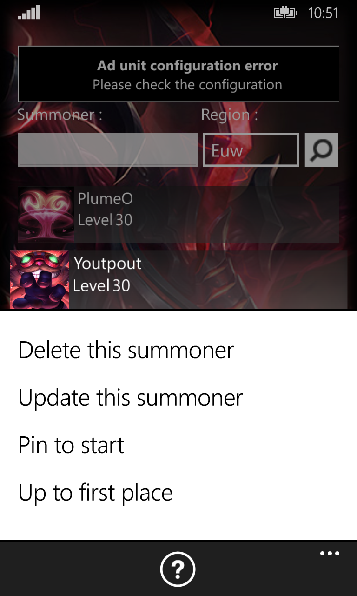
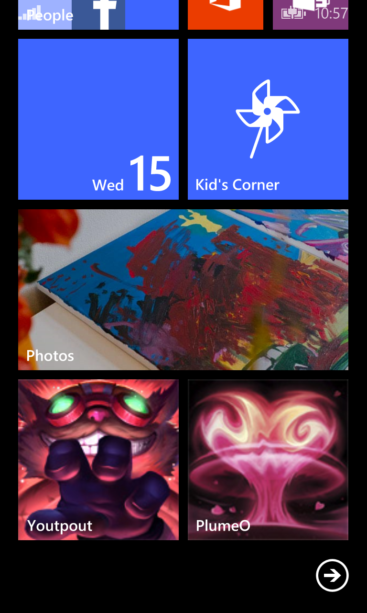

LoL Stat
The apps
LoL Stat is mobile apps for Windows Phone 8.1, with LoL Stat you can :
- Store some summoners
- Show current game
- Show recents games
- Show ranking information
Add a summoner
For Search a summoner enter his name in summoner field
Choose the region
Click on the magnifying glass and the magic happens
The only limit you have to store the summoners is your phone limit
Summoner options
If you do a long click on summoner you have menu for:
- Delete summoner from the list
- Update summoner, update summoner info (profile icon, level or name)
- Pin to Start, add to home menu, see below
- Up to first place, to move summoner on the begin of the list
Pin to start
If you click once on summoner you can see more info
Current game
See current game if summoner playing actually
Click once on summoner to show ranking info
Click twice for see more info
Recents games
You can see last 10 games of summoner
Click on game for see more info
Click on summoner in team info for see more info
Ranking
Show ranking info if summoner is ranked
Legal Information
LoL Stat isn't endorsed by Riot Games and doesn't reflect the views or opinions of Riot Games or anyone officially involved in producing or managing League of Legends. League of Legends and Riot Games are trademarks or registered trademarks of Riot Games, Inc. League of Legends © Riot Games, Inc.